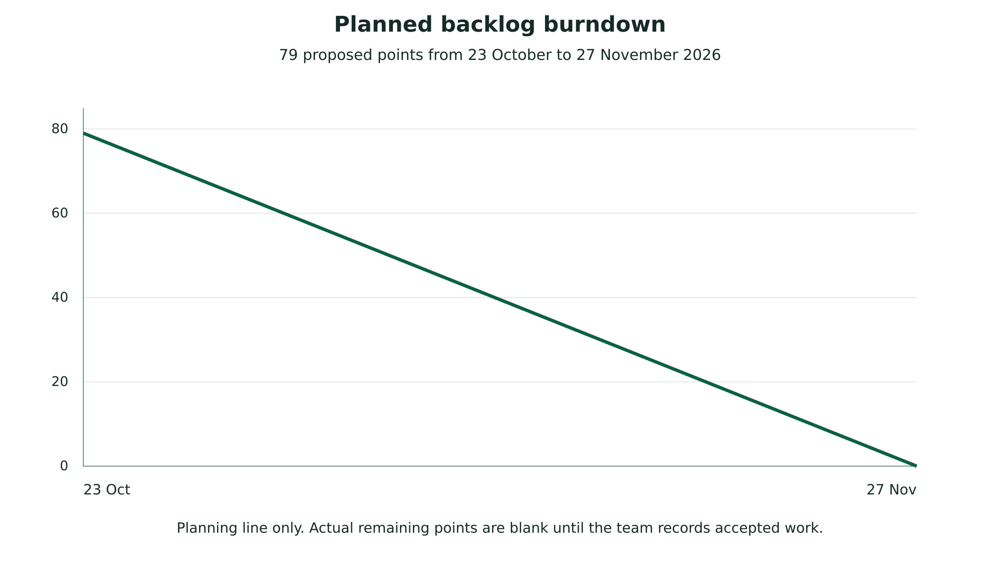

Project management records
Bolaji maintains these records with evidence supplied by all members. The sprint backlog is a proposed remaining-review plan from 23 October 2026. Its points are estimates. Actual burndown values remain blank until accepted work is recorded.
- Weekly report template
- 23 October baseline snapshot
- Supervisor minutes template
- Sprint review template
- Sprint backlog
- Burndown observations
- Risk register
- Issue register
- Change register
- Contribution register
- Peer assessment form
- Consent and usability form
- Deployment acceptance record

The plotted line is the proposed planning line. No actual completion series is supplied. Enter the real accepted remaining points in the CSV at each reporting date and explain scope changes in the notes.